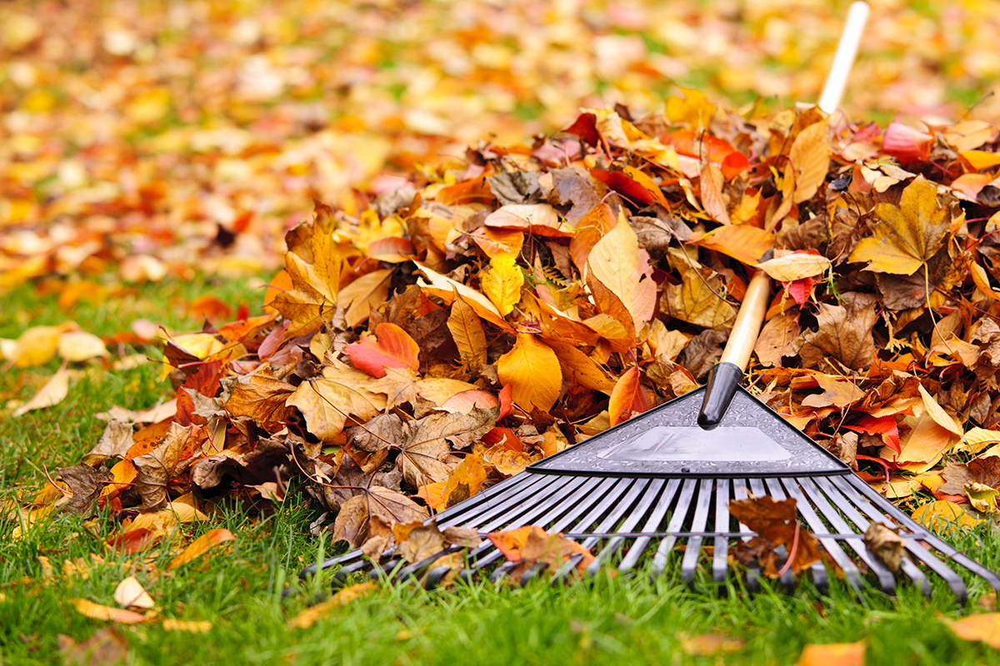

Who Says 20 Year Olds can't Jump in Leaf Piles

Pros of Jumping in Leaf Piles:
Jumping in leaf piles is an awesome fall time activity! It is something you can do with your friends
without having to spend a bunch of money. All you need is some friends that know how to have a good time!
How Does Jumping in Leaf Piles make you Feel?
- Reed: "Jumping in leaf piles gives me seritonin!"
- Kenzie:"Jumping in leaf piles with your friends is a great photo op moment. I definitely recomend."
- Becca: "I love getting to jump in leaf piles. It brings me back to my childhood."

Want more info - Click the link below:
Benefits of Jumping in Leaf Piles